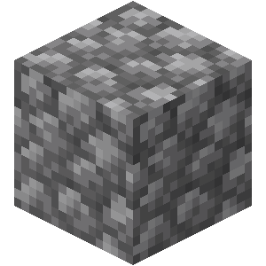
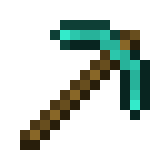
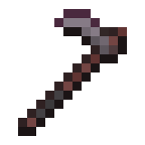

-
Terra 1°

- Bloco
O bloco de terra é encontrada em qualquer altitude e compõe a maior parte das camadas superiores do terreno da maior parte dos biomas da Superfície, preenchendo a lacuna entre pedras e blocos de grama em diferentes densidades.
-
Pedregulho 2°
- Bloco
Pedregulho é um bloco comum, obtido da mineração de pedra. Sua textura se assemelha a um bloco de pedra com uma superfície amplamente rachada.
-
Pedra 3°
- Bloco
Pedra é um bloco encontrado extremamente comumente na Superfície.
-
Diamante 4°

- Item
Diamante é um minério raro obtido do minério de diamante ou baús de saque. Eles são principalmente usados para criar o mais alto nível de armaduras e ferramentas, e a mesa de encantamentos, blocos de diamante, e toca-discos.
-
Picareta de Diamante 5°
- Ferramenta
A picareta mais evoluída que você pode conseguir no overworld.
-
Ferro 6°

- Item
As Barras de ferro são parte de uma família de metais versáteis, extensivamente usada na criação.
-
Espada de Ferro 7°

- Ferramenta
Uma espada de ferro é uma arma corpo-a-corpo usada principalmente para causar dano a criaturas ou jogadores.
-
Enxada de Netherita 8°
- Ferramenta
Uma enxada de netherita é uma ferramenta usada para arar terra, blocos de grama em terra arada, além disso, ela também serve para colher certos blocos baseados em plantas mais rápidos.
-
Casco de Tartaruga 9°
- Armadura
Cascos de tartaruga ou Carapaças de tartaruga são itens que são usados para poções ou como capacete para dar ao jogador o efeito de status de respiração aquática.
-
Peiroral de Netherita 10°
- Armadura
Peitoral de Netherita é um tipo de armadura que cobrem a parte superior do corpo do jogador.